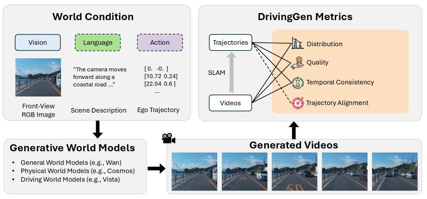

本論文は、自動運転向けの生成ビデオ世界モデルを評価するための初の包括的ベンチマーク DrivingGen を提案する（著者：Yang Zhou、Hao Shao ほか、University of Toronto および CUHK MMLab）。ビデオ生成モデルは「世界モデル」の一形態として、エージェントが複雑なシーンの時間的発展をモデル化することで未来を想像する能力を持つ。自動運転の文脈では、自車と周囲エージェントの未来を予測するドライビング世界モデルとして機能し、スケーラブルなシミュレーション、コーナーケースの安全なテスト、豊富な合成データ生成を可能にする。
しかし急速に発展するこの分野には、進捗を測定し研究優先事項を導く厳格なベンチマークが存在していなかった。既存の評価は限定的であり、汎用的なビデオ指標は安全性が重要な撮像要因を見落とし、軌跡の妥当性がほとんど定量化されず、時間的・エージェントレベルの一貫性が無視され、自車コンディショニングに対するコントロール可能性が考慮されていなかった。DrivingGenはこれらのギャップを解消するために設計された。
スケーラブルな学習技術に牽引され、生成ビデオモデルは近年著しい進歩を遂げており、多様なシーンと動作にわたる高忠実度ビデオの合成が可能になった。これらのモデルは「世界モデル」──未来を想像できる予測シミュレータ──への有望な道筋を示している。
この知見に触発され、ドライビング世界モデル（初期シーンとオプションの条件（テキストプロンプト、走行アクションなど）が与えられると、自車の将来の動きと周囲エージェントの軌跡の進化を予測するモデル）の開発が加速している。このようなモデルはクローズドループシミュレーションと合成データ生成を可能にし、実世界データへの依存を低減させる。また、ドライビング世界モデルはエンドツーエンドの自動運転システムと密接に結びついており、予測された将来のシーンと軌跡のエラーが直接的に安全でない意思決定につながる可能性がある。
DrivingGenが解決しようとしている既存の評価における4つの主要な限界を次に説明する。
ほとんどのベンチマークはFréchet Video Distance（FVD）などの分布レベルの指標に依存してビデオリアリズムを評価し、一部は視覚的品質や意味論的一貫性のスコアリングに人間の好みに合わせたモデル（VLMなど）を採用している。しかし、自動運転は撮像における独自の制約を課す。センサーアーティファクト、グレア、その他の歪みは重大な安全上の意味を持つが、汎用ビデオ指標ではこれらを捉えられない。
生成されたビデオの基盤となる自車運動軌跡が重要である。自動運転における高品質なビデオ生成は、自然で、動的に実現可能で、インタラクションを意識した、安全な軌跡を生成しなければならない。これらの特性は単なる視覚的リアリズムを超えており、既存の評価では軌跡妥当性がほとんど定量化されていない。
時間的一貫性は、周囲のオブジェクトが安全と意思決定に直接影響する自動運転において重要である。先行ベンチマークはシーンレベルの一貫性に焦点を当てることが多いが、エージェントレベルの一貫性（突然の外観変化や不自然な消失など）を無視する傾向があり、これは自動運転シミュレーションのリアリズムと信頼性を著しく損なう可能性がある。
自車コンディショニングされたビデオ生成において、生成された動作がコンディショニング軌跡に忠実に従うかどうかを評価することが重要である。このコントロール可能性の側面は既存のベンチマークではほぼ見落とされているが、安全な計画と信頼性の高いクローズドループ走行に不可欠であり、不整合は壊滅的な結果をもたらす可能性がある。
既存ベンチマークのもう一つの主要な限界は、実世界展開に不可欠な重要な次元に沿った多様性の不足である。
DrivingGenは、ドライビング固有の制約と基準の下で生成世界モデルを評価するための包括的ベンチマークを確立することを目標とする。ベンチマークには2つの主要コンポーネントが含まれる：1）天候、時間帯、地域、走行マニューバにおいて多様な慎重にキュレーションされたデータセット、2）一般的な視覚的観点（外観など）と自動運転およびロボティクス観点（軌跡の物理的実現可能性など）の両方からビデオ品質を評価する多面的指標。
データセット構築においては2つの補完的なトラックが設けられている。
オープンドメインの多様で未見の走行シナリオへのモデルの汎化を評価するために設計されている。インターネットソースのデータを使用し、世界中の複数の都市と地域にわたる広範なカバレッジを確保している。
オープンドメイントラックを補完するトラック。オープンドメイン設定では多様な未見シナリオへの汎化を評価するが、生成された軌跡が指定されたコンディショニング軌跡に従うかどうかを検証しない。このトラックはそのコントロール可能性に焦点を当て、生成ビデオから導出された軌跡が自車軌跡指示にどれほど一致するかを測定する。5つのオープンソース走行データセット（Zod（欧州）、DrivingDojo（中国）、COVLA（日本）、nuPlan（米国）、WOMD（米国））からデータを集約している。
評価の意味を確保するために、複数の次元にわたる多様性を明示的にコントロールしている。
ビデオ生成の推論は時間がかかるため、400サンプル（トラックあたり200）に制限し、効率と意味のある評価のバランスを取っている。
DrivingGenの指標は4つの主要次元をカバーする。
ビデオと軌跡の両方の分布レベルのリアリズムを評価する。ビデオにはFVD（Fréchet Video Distance）を、軌跡にはFTD（Fréchet Trajectory Distance）を使用する。FTDはMTRのagent_polyline_encoderを使用した軌跡埋め込みに対してFIDスタイルのガウシアンフレシェ距離を適用する。
主観的な画像品質（人間の知覚品質）と客観的な画像品質の両方を含む。客観的指標にはModulation Mitigation Probability（MMP）が含まれ、車両照明や路傍の照明機器におけるPWM変調がカメラで引き起こす輝度変調（フリッカー）を検出する。軌跡品質は快適性、動作、曲率の3つのサブ指標の加重幾何平均として定義される。
シーンレベルとエージェントレベルの両方での時間的一貫性を評価する。エージェント消失異常検出は、各エージェントの消失に対して3フレームを準備し、視覚言語モデル（VLM）に「Natural（自然な消失）」か「Unnatural（不自然な消失）」かを分類させる。全評価済みトラックレットが「not abnormal」である場合のみそのビデオは「clean」とみなされる。
生成されたビデオから標準的なPnP法（SIFTとRANSACスキームを使用）とUniDepthV2を使用して軌跡を抽出する。SLAM失敗に対してはフェイルオーバー戦略を適用：SLAMが次のカメラポーズを推定できない場合、最後の既知のポーズを一定速度モデルで前方外挿し、リアリスティックすぎる優位性を与えないために姿勢方向に小さなランダム摂動を加える。これにより、すべてのビデオで完全な軌跡を取得する。
DrivingGenでは14の競争力ある生成世界モデルを評価している。3つのカテゴリにわたる：1）7つの汎用ビデオ世界モデル（Gen-3、Kling、CogVideoX、Wan、HunyuanVideo、LTX-Video、SkyReels）、2）2つの物理世界モデル（Cosmos-Predict1、Cosmos-Predict2）、3）5つの走行専用世界モデル（Vista、DrivingDojo、GEM、VaViM、UniFuture）。
両トラックにわたり、クローズドソースモデルは常に上位を占め、強い知覚スコアと安定したエージェント挙動を実現している。オブジェクトの異常消失がほとんど発生せず、時間的にシーンの一貫性を維持している。
複数のオープンソースモデルが個々の次元でクローズドソースリーダーに近づくか、匹敵している。例えばCogVideoXとWanは両トラックで強いビデオ分布リアリズム（低FVD）を達成しており、オープンソースモデルが特定の側面では優れることを示す。
明確な「ペルソナ」が観察される：一部のモデルは高い視覚品質を達成するが軌跡遵守とエージェントごとの一貫性は中程度にとどまる。一方、走行専化モデルはコマンドされたパスを正確にたどり物理的に妥当な動作（低ADE/DTW）を示すが、顕著なアーティファクトを持つ視覚忠実度では劣る。現在、強いフォトリアリズムと正確で物理的に一貫した動作を組み合わせることに成功したモデルはなく、ドライビング世界生成の重要なフロンティアとなっている。
自車軌跡コンディショニングの下で、モデルは重大なADE/DTWエラーを示し、コマンドされたパスへの不十分な遵守を示している。これは2つの主要な要因から生じる可能性がある：1）生成されたビデオのアーティファクト（テクスチャの繰り返し、ブレ、不安定なジオメトリ）がSLAMベースの軌跡復元を阻害する、2）モデル自体が意図した軌跡に従うことができない不完全な動作生成。
既存のベンチマークは生成された走行ビデオの評価にFVDなどの分布レベルの指標のみに依存することが多い。しかし良好なFVD/FTDだけでは妥当な走行を意味しない：ビデオは分布に近く見えながらもstop-goジッター、アイデンティティドリフト、非物理的消失を示す場合がある。分布、知覚品質、時間的一貫性、軌跡整合性を共同で報告することで、DrivingGenはこれらの隠れた失敗モードを露呈し、各モデルが欠ける点を正確に強調する。
本論文はDrivingGenを紹介した。これは自動運転向けの生成世界モデルを評価するために設計された包括的なベンチマークである。DrivingGenは、多様な天候・時間帯・世界的な地域・複雑な走行マニューバにわたる多様なデータセットを、視覚的リアリズム・軌跡妥当性・時間的一貫性・コントロール可能性を共同で測定する多面的指標スイートと統合している。
幅広い最先端モデルのベンチマークにより、DrivingGenは視覚忠実度・物理一貫性・コントロール可能性間の重大なトレードオフを明らかにし、現在のアプローチの強みと限界に関する明確な洞察を提供する。このベンチマークは、信頼性が高く展開可能な走行世界モデルの開発を導き、自動運転における安全でスケーラブルなシミュレーション・計画・意思決定に向けた進歩を促進できる統一された再現可能なフレームワークを確立する。
現在400データサンプルに限定されているが、ビデオの生成と評価はリソース集約的であるためである。将来の拡張では、スケールアップがエキサイティングな方向性となる。生成モデルが高速化し、データセットがより容易に利用可能になるにつれ、何千ものクリップへのスケールアップが可能になり、ロングテールカバレッジをさらに向上させる。
信頼性の高いクローズドループパフォーマンスの確保は自動運転にとって重要であり、DrivingGenはまずオープンループの予測品質とリアリズムをベンチマークすることでそこへの一歩となる。現在のすべての生成ビデオ世界モデルはオープンループのビデオ生成のために設計されており、標準化されたクローズドループ世界生成フレームワークはまだ存在していない。
DrivingGenは生成映像自体のビデオリアリズム、物理一貫性、コントロール可能性を直接測定する指標に焦点を当てている。補完的な方向性として自動運転の下流タスクからの指標（合成ビデオを使用して自動運転スタックがどれほど良く機能するか）を組み込むことが考えられる。また現在のデータセットは単一フロントビューカメラフィードに限定されており、マルチビュービデオやセンサーデータ（LiDAR、HDマップなど）への拡張が将来方向として挙げられる。
シーンコンテンツ（他のエージェント、道路レイアウトなど）のコントロール可能性の評価は自動運転アプリケーションに非常に有用である。モデルサポートとデータセット複雑性の両方における統一評価の実装の課題から、現在のベンチマークには含まれていない。
現在のベンチマークでは反事実推論を明示的に評価していない。DrivingGenはリアルな走行ビデオに焦点を当てており、実際に起こったシナリオのみ評価できる。将来の方向性として、仮説的なイベントや修正（宇宙飛行士が馬に乗って道路を渡るなど）を導入し、モデルがそのような反事実生成に従えるかどうかを確認する新指標を提案することが挙げられる。